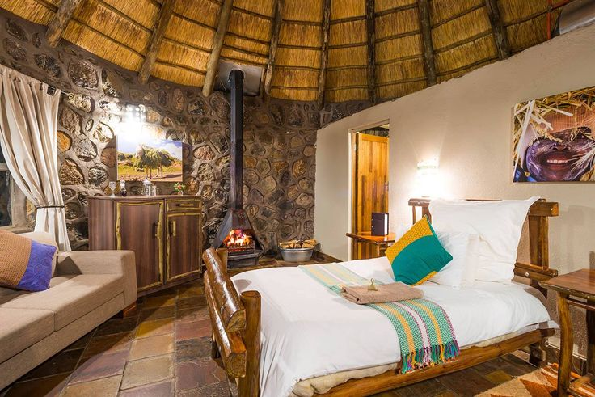
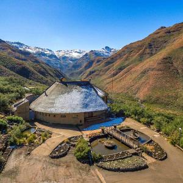

Maletsunyane
A thundering waterfall, cliff-top walks and the gateway to Semonkong.

↗Places to begin
From the northern gateway to the quiet eastern passes, these are the places that stay with you.
A thundering waterfall, cliff-top walks and the gateway to Semonkong.

↗High country, shepherd paths and a horizon that seems to have no edge.
 ↗
↗The roof of the kingdom: dramatic passes, clear rivers and open silence.

↗Ancient rock art, sandstone cliffs and a softer introduction to the mountains.
 ↗
↗